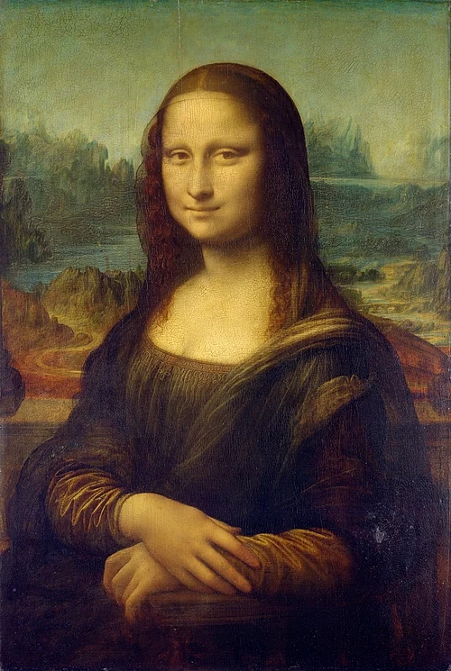
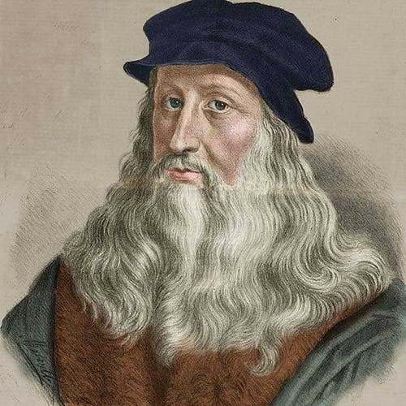
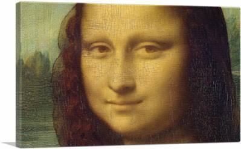
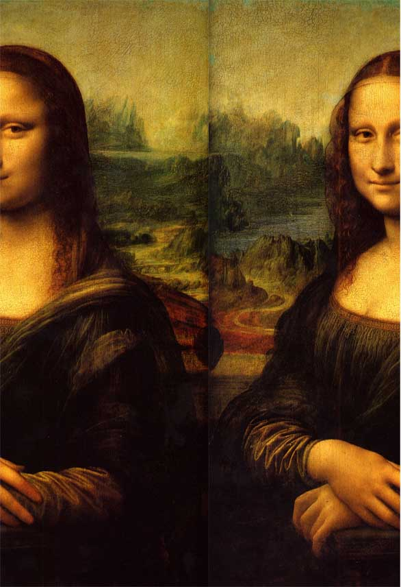
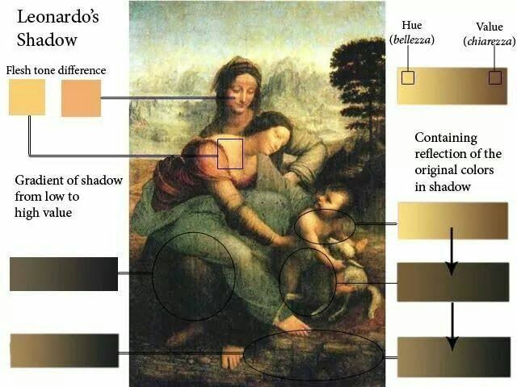
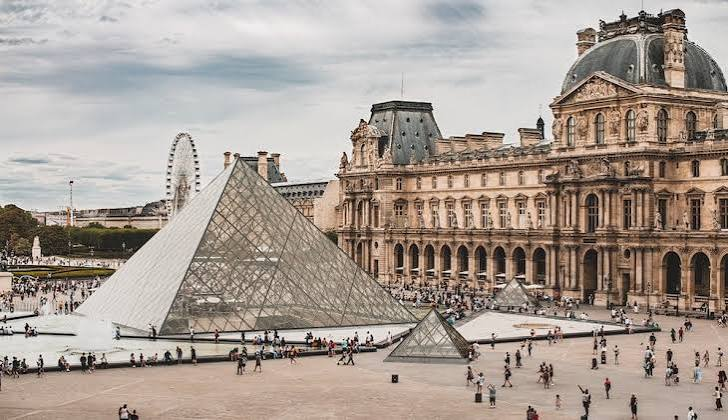

النهضة الأوروبية: دراسة أثر فني – لوحة الجوكندا (الموناليزا)
مقدمة
تُعدّ لوحة الجوكندا (La Joconde)، أو ما يُعرف عالميًّا بـالموناليزا (Mona Lisa)، أشهر عمل فني في تاريخ الإنسانية، وأبرز رمز على الإطلاق للنهضة الفنية الأوروبية. رسمها الفنان الإيطالي العبقري ليوناردو دا فينشي (Léonard de Vinci) بين سنتي 1503 و1519 تقريبًا، وهي محفوظة اليوم في متحف اللوفر (Louvre) بباريس. فما هي هذه اللوحة؟ ومن هو صاحبها؟ وما هي خصائصها الفنية؟ وما سرّ شهرتها العالمية؟
ما هي لوحة الجوكندا ومن رسمها؟ وما السياق التاريخي لإنجازها؟ وما خصائصها الفنية والتقنية؟ وما دلالاتها الرمزية والفكرية؟ وما سرّ شهرتها العالمية؟
I التعريف باللوحة وصاحبها
1. صاحب اللوحة: ليوناردو دا فينشي
وُلد ليوناردو دا فينشي سنة 1452 ببلدة فينشي (Vinci) قرب فلورنسا (Florence) بإيطاليا، وتوفّي سنة 1519 في قلعة كلو-لوسي (Clos-Lucé) بفرنسا. يُعدّ النموذج الأمثل لـ"رجل عصر النهضة" (L'uomo universale) بفضل تعدّد مواهبه الاستثنائية، فقد كان رسّامًا ونحّاتًا ومهندسًا معماريًّا وعالمًا في التشريح (Anatomie) والرياضيات والميكانيك والطبيعيات والجيولوجيا والفلك، إضافة إلى كونه موسيقيًّا وشاعرًا. تتلمذ على يد الفنان أندريا دل فرّوكيو (Andrea del Verrocchio) في فلورنسا، وعمل في خدمة أبرز أمراء عصره، ومنهم لوران دي ميديسي (Laurent de Médicis) في فلورنسا، ولودوفيكو سفورزا (Ludovico Sforza) دوق ميلانو، والملك الفرنسي فرانسوا الأول (François 1er) الذي اقتنى لوحته الجوكندا في نهاية حياته.
ومن أشهر أعماله الفنية إلى جانب الجوكندا: لوحة العشاء الأخير (La Cène) المرسومة على جدار كنيسة سانتا ماريا ديلي غراتزي بميلانو (1495-1498)، ولوحة الرجل الفيتروفي (L'Homme de Vitruve) التي تجسّد التناسب المثالي لجسم الإنسان، إضافة إلى رسمة السيدة وابن عرس (La Dame à l'hermine) والعذراء في الصخور (La Vierge aux rochers).
2. اللوحة: بطاقة تعريف
3. سياق إنجاز اللوحة
أنجز ليوناردو دا فينشي هذه اللوحة على مرحلتين: بدأها في فلورنسا حوالي سنة 1503 بطلب من التاجر الفلورنسي فرانتشيسكو دل جيوكوندو (Francesco del Giocondo) ليرسم زوجته ليزا غيرارديني (Lisa Gherardini)، وهي سيدة من أسرة نبيلة فلورنسية. لكن ليوناردو لم يُسلّم اللوحة لأصحابها، بل احتفظ بها معه طوال حياته، وحملها معه إلى فرنسا سنة 1516 عندما دُعي إلى بلاط الملك فرانسوا الأول. وبعد وفاته سنة 1519، اشتراها الملك الفرنسي فرانسوا الأول وأصبحت من مقتنيات التاج الفرنسي، ثم انتقلت بعد الثورة الفرنسية إلى متحف اللوفر بباريس حيث لا تزال محفوظة إلى اليوم. ويُرجّح أن ليوناردو واصل تحسين اللوحة وتعديلها خلال السنوات الأخيرة من حياته، ممّا يجعلها من أكثر الأعمال الفنية تعقيدًا وإتقانًا في تاريخ الفن.
II وصف اللوحة وتحليلها الفني
1. الوصف الظاهري للوحة
تمثّل اللوحة صورة نصفية (Buste) لسيدة تجلس في مواجهة المشاهد تقريبًا، مع انحراف طفيف نحو اليمين. تُظهر السيدة وجهًا هادئًا وابتسامة غامضة غير واضحة الحدود، وشعرًا بنيًّا مسترسلًا على كتفيها، وثوبًا داكن اللون دون أكمام كاملة، مع ثنيات دقيقة ومتقنة تبرز التمكّن من رسم القماش. ويستند كوعها الأيسر إلى مسند ذراع الكرسي، بينما تضع يدها اليمنى فوق يدها اليسرى بتقاطع أنيق وهادئ. وتنفتح خلف السيدة منظر طبيعي واسع، يبرز فيه جسر وطريق متعرّج ونهر وبعض الصخور والجبال في الأفق، إضافة إلى إحساس عميق بالفضاء والهواء (الاستشراف الجوّي).
2. أهم الخصائص الفنية والتقنية
جسّدت اللوحة أبرز مقوّمات فن النهضة الأوروبية، ومن أبرز خصائصها الفنية والتقنية:
- التقنية الزيتية المتدرّجة (Sfumato): استخدم ليوناردو تقنية "السفوماتو" التي تعني "التدخين" أو "التلاشي"، وتعتمد على طبقات متعدّدة من الألوان الزيتية الشفّافة المتراكمة بدرجات متدرّجة ناعمة، ممّا أعطى الوجه ملامح ناعمة واندماجًا متدرّجًا لا تُظهر فيه حدودًا واضحة. وقد ظهر هذا جليًّا في رسم زاويتي الفم وحدود العينين، وهما موضع ما يُسمّى "الابتسامة الغامضة".
- المنظور الخطّي والهوائي (Perspective): طبّق ليوناردو قواعد المنظور الخطّي الرياضي التي أرساها في عصر النهضة، فأحسن توزيع الأحجام والمسافات في اللوحة. كما اعتمد المنظور الجوّي (الاستشراف الهوائي)، حيث تظهر الجبال والمسافات البعيدة في الخلفية بألوان باهتة وأكثر زرقة وضبابية، ممّا يوحي بعمق الفضاء واتّساعه.
- التوازن والتناسب: وظّف ليوناردو معرفته بالرياضيات وقواعد التناسب، فجعل السيدة تقف في موضع يجعل جسدها يشكّل شكلًا هرميًّا يخضع لمبدأ التناسب والانسجام، مع توازن بين كتلة الجسم والمنظر الطبيعي في الخلفية.
- الاهتمام بالتفاصيل: أبدع ليوناردو في رسم أدقّ التفاصيل: خصلات الشعر، وثنيات القماش، والشكل الدقيق للأصابع، وتفاصيل الملابس، ممّا يدلّ على رهافة ملاحظته ومهارته اليدوية العالية.
- الاهتمام بالإنسان (Anatomie): تُجسّد اللوحة مبدأ الإنسانية (L'humanisme) في عصر النهضة القائم على الإعجاب بالإنسان وتقديم قدراته في أبهى صورة. وقد استعان ليوناردو بدراساته التشريحية الدقيقة في رسم الأعضاء والملامح بشكل واقعي ودقيق.
- الكياري-سكورو (Clair-obscur): اعتمد ليوناردو على أسلوب الظلّ والنور (الكياري-سكورو) في نمذجة الوجه والجسم، لإبراز الحجوم الثلاثية الأبعاد وإعطاء اللوحة واقعية وعمقًا إضافيًّا.
3. تفاصيل دقيقة وأسرار اللوحة
تعتبر الجوكندا من أكثر الأعمال الفنية إثارةً للفضول بفضل غموضها وتفاصيلها الدقيقة، ومن أبرز هذه التفاصيل:
- الابتسامة الغامضة: تظهر ابتسامة الجوكندا متغيّرة حسب زاوية النظر إليها، فتبدو حاضرة عند النظر إلى عينيها، وتكاد تختفي عند النظر مباشرة إلى فمها. ويُرجّح أن السبب في ذلك تقنية "السفوماتو" التي رسم بها زاويتي الفم بلمسات ناعمة متلاشية.
- غياب الحواجب والرموش: تظهر الجوكندا بدون حواجب ولا رموش واضحة، وقد اختلف الباحثون في تفسير ذلك بين من يرى أن العادة الجمالية في ذلك العصر كانت تقضي بحلق الحواجب، ومن يرى أن الحواجب كانت مرسومة ثم تلاشت بفعل الزمن وبفعل عمليات الترميم.
- النظر المباشر نحو المشاهد: تُعدّ نظرة الجوكندا نحو المشاهد مباشرة من أوائل النظرات المباشرة في تاريخ البورتريه الأوروبي، ممّا يُشعر المشاهد بأنها تتعمّق في داخله وتعرف كل شيء عنه.
- الاندماج بين الشخصية والخلفية: على عكس كثير من البورتريهات السابقة، لا تظهر الجوكندا منعزلة في فضاء مغلق، بل مندمجة في منظر طبيعي واسع، ممّا يعطي انطباعًا بالحياة والحركة والتناغم بين الإنسان والطبيعة.
«تُعدّ الجوكندا أكثر اللوحات شهرة في العالم، وأكثرها تعرّضًا للدراسة والتأويل. فهي في آن واحد: صورة ذاتية لواقعية الرسم الليوناردي، ووثيقة على مركزية الإنسان في فكر عصر النهضة، ورمز للجمال الإنساني الذي لا تنفد أسراره».
III دلالات اللوحة وأثرها العالمي
1. دلالات اللوحة الفكرية والفنية
تعكس لوحة الجوكندا جملة من المبادئ والقيم الأساسية في فكر عصر النهضة الأوروبية، ومن أهمّها:
- الإعجاب بالإنسان (L'humanisme): تجسّد اللوحة فكرة أن الإنسان هو محور الاهتمام في عصر النهضة، وأنّ قيمته تكمن في قدراته وإمكاناته الفردية، وليس في انتمائه لطبقة اجتماعية أو سلطة دينية. فاللوحة تحتفي بالإنسان في أبهى صورة وأكثرها خصوصية.
- العلم والتجربة: تُجسّد اللوحة اندماج الفن مع العلم، فقد استعان ليوناردو بمعارفه في التشريح والرياضيات والطبيعة في رسم اللوحة، ممّا جعلها في نفس الوقت دراسة علمية ورائعة فنية.
- الواقعية والدقّة: تُبرز اللوحة توجّه فن النهضة نحو الواقعية والدقّة في نقل الطبيعة والإنسان، خلافًا للفنّ الديني الوسيطي الذي كان يقوم على رموز ثابتة ومثالية مفارقة للواقع.
- الحرية الإبداعية: عبّرت اللوحة عن حرية الفنان في اختيار موضوعه وأسلوبه، وهو أمر لم يكن متاحًا في العصور الوسيطية التي سيطرت فيها الكنيسة على الفن ورسمت أهدافه.
- الإرث الإغريقي-اللاتيني: استعان ليوناردو بالتراث الفني والفكري الإغريقي واللاتيني، خاصة في مبدأ التناسب الرياضي والجمالي الذي أرساه فلاسفة اليونان، وطبّقه في رسم الأبعاد والتناسب بين أعضاء الجسد.
2. أثر اللوحة العالمي
تجاوزت شهرة الجوكندا حدود المتاحف وصالات العرض الفني لتغدو واحدة من أكثر الصور المعروفة في العالم، وشكّلت على مدار القرون موضوع إلهام للمبدعين، ونقطة جذب لملايين الزوّار من مختلف أنحاء العالم. ومن أبرز مظاهر أثرها العالمي:
• وجودها اليوم في متحف اللوفر بباريس كأحد أبرز معالم الجذب السياحي، ويقصدها سنويًّا ملايين الزوّار.
• تعرّضها لسرقة شهيرة سنة 1911 على يد العامل الإيطالي فينتشنزو بيروجيا (Vincenzo Peruggia)، ثم استرجاعها بعد سنتين، وهو ما ساهم في إشهارها العالمي.
• اعتبارها مرجعًا أساسيًّا في تدريس تاريخ الفن، ودليلًا على خصائص فن النهضة الأوروبية.
• استلهامها في أعمال فنية وثقافية كثيرة: أفلام، أغاني، لوحات معاصرة، إعلانات، ونصوص أدبية.
خاتمة
تُعدّ لوحة الجوكندا تجسيدًا كاملًا لفكر عصر النهضة الأوروبية ومبادئه، إذ جمعت بين دقّة الرسم العلمي، وعمق الطرح الإنساني، وحرية الإبداع الفني. وهي بذلك ليست مجرّد صورة لسيدة فلورنسية، بل هي وثيقة حضارية تنطق بتحوّل الفكر الأوروبي في مطلع العصر الحديث، ورمز خالد للإبداع الإنساني.
📖 تعريفات
👤 شخصيات
- ليوناردو دا فينشي (Léonard de Vinci): فنان وعالم إيطالي (1452-1519)، وُلد في بلدة فينشي قرب فلورنسا. يُعدّ النموذج الأمثل لـ"رجل عصر النهضة" بفضل تعدّد مواهبه: رسّام ونحّات ومهندس معماري وعالم تشريح ورياضيات وميكانيك وطبيعيات وجيولوجيا وفلك وموسيقي. صاحب لوحة الجوكندا و"العشاء الأخير" و"الرجل الفيتروفي".
- ليزا غيرارديني (Lisa Gherardini): سيدة فلورنسية من أسرة نبيلة، زوجة التاجر فرانتشيسكو دل جيوكوندو، وهي الشخصية التي رسمها ليوناردو في لوحة الجوكندا حوالي سنة 1503.
- فرانتشيسكو دل جيوكوندو (Francesco del Giocondo): تاجر فلورنسي من الطبقة الثرية، طلب من ليوناردو دا فينشي رسم بورتريه لزوجته ليزا غيرارديني، وهو ما عُرف بـ"لا جيوكوندا" أي "الزوجة جيوكوندو".
- أندريا دل فرّوكيو (Andrea del Verrocchio): فنان إيطالي من فلورنسا، أستاذ ليوناردو دا فينشي الذي تتلمذ في ورشته.
- لوران دي ميديسي (Laurent de Médicis): رجل أعمال فلورنسي وراعي فنون، كان ليوناردو دا فينشي في خدمته بفلورنسا.
- لودوفيكو سفورزا (Ludovico Sforza): دوق ميلانو، كان ليوناردو دا فينشي في خدمته وأنجز له بعض أعماله الفنية والهندسية.
- فرانسوا الأول (François 1er): ملك فرنسا (1494-1574)، استدعى ليوناردو دا فينشي إلى بلاطه في نهاية حياته، واقتنى لوحة الجوكندا بعد وفاته، فأصبحت من مقتنيات التاج الفرنسي ثم من مقتنيات متحف اللوفر.
- فينتشنزو بيروجيا (Vincenzo Peruggia): عامل إيطالي، من مواليد 1881، اشتهر بسرقته للوحة الجوكندا من متحف اللوفر سنة 1911، ثم أعادها سنة 1913 بعد محاولة بيعه إياها لمتحف إيطالي.
🌍 دول ومناطق
- فينشي (Vinci): بلدة إيطالية قرب فلورنسا، وُلد فيها ليوناردو دا فينشي سنة 1452.
- فلورنسا (Florence): مدينة إيطالية، مهد عصر النهضة، تتلمذ فيها ليوناردو دا فينشي وبدأ رسم لوحة الجوكندا.
- ميلانو (Milan): مدينة إيطالية، عمل بها ليوناردو دا فينشي في خدمة الدوق لودوفيكو سفورزا، ورسم فيها لوحة "العشاء الأخير".
- كلو-لوسي (Clos-Lucé): قلعة فرنسية قرب أمبوز (Amboise)، أقام فيها ليوناردو دا فينشي في نهاية حياته، وتوفي فيها سنة 1519.
- باريس: عاصمة فرنسا، بها متحف اللوفر حيث تُحفظ لوحة الجوكندا إلى اليوم.
- متحف اللوفر (Le Louvre): متحف فرنسي بباريس، يُعدّ من أكبر المتاحف في العالم، ويحتوي على لوحة الجوكندا، ويقصده سنويًّا ملايين الزوّار.
⚔️ أحداث هامة
- تقنية السفوماتو (Sfumato) – اختراع ليوناردو: تقنية رسم ابتكرها ليوناردو دا فينشي وتعتمد على طبقات متعدّدة من الألوان الزيتية الشفّافة المتراكمة بدرجات متدرّجة ناعمة، ممّا يعطي الوجه ملامح ناعمة واندماجًا متدرّجًا لا تُظهر فيه حدودًا واضحة.
- الكياري-سكورو (Clair-obscur): أسلوب فني يعتمد على تباين الظلّ والنور في رسم الأعمال الفنية، استخدمه ليوناردو في الجوكندا لإبراز الحجوم الثلاثية الأبعاد ولإعطاء اللوحة واقعية وعمقًا.
- المنظور الجوّي (Perspective atmosphérique): تقنية فنية تعتمد على تمثيل المسافات البعيدة بألوان باهتة وأكثر زرقة وضبابية، ممّا يوحي بعمق الفضاء واتّساعه، استخدمها ليوناردو في خلفية الجوكندا.
- سرقة الجوكندا 1911: سرقة لوحة الجوكندا من متحف اللوفر سنة 1911 على يد العامل الإيطالي فينتشنزو بيروجيا، ثم استرجاعها سنة 1913 بعد محاولة بيعه إياها لمتحف إيطالي.
📜 أعمال فنية
- لوحة الجوكندا (La Joconde / Mona Lisa): أشهر لوحة في تاريخ الفن، رسمها ليوناردو دا فينشي حوالي 1503-1519، تمثّل صورة نصفية لسيدة فلورنسية هي ليزا غيرارديني، محفوظة بمتحف اللوفر بباريس.
- لوحة العشاء الأخير (La Cène): من أشهر أعمال ليوناردو دا فينشي، مرسومة على جدار كنيسة سانتا ماريا ديلي غراتزي بميلانو بين 1495 و1498.
- الرجل الفيتروفي (L'Homme de Vitruve): رسمة لليوناردو دا فينشي تجسّد التناسب المثالي لجسم الإنسان، وهي مستوحاة من كتابات المعماري الروماني فيتروفيوس.
- السيدة وابن عرس (La Dame à l'hermine): من أشهر بورتريهات ليوناردو دا فينشي، أُنجز حوالي سنة 1490، تمثّل سيسيليا غاليراني عشيقة دوق ميلانو لودوفيكو سفورزا.
- العذراء في الصخور (La Vierge aux rochers): من أهم أعمال ليوناردو دا فينشي، أُنجز بين 1483 و1486، محفوظ بمتحف اللوفر.
📅 سنوات وفترات
- 1452: سنة ولادة ليوناردو دا فينشي ببلدة فينشي قرب فلورنسا.
- 1495-1498: إنجاز ليوناردو دا فينشي لوحة "العشاء الأخير" بميلانو.
- 1503: بدء ليوناردو دا فينشي في رسم لوحة الجوكندا بفلورنسا.
- 1516: انتقال ليوناردو دا فينشي إلى فرنسا بدعوة من الملك فرانسوا الأول، حاملًا معه لوحة الجوكندا.
- 1519: سنة وفاة ليوناردو دا فينشي بقلعة كلو-لوسي بفرنسا.
- 1911: سرقة لوحة الجوكندا من متحف اللوفر على يد العامل الإيطالي فينتشنزو بيروجيا.
- 1913: استرجاع لوحة الجوكندا بعد سنتين من سرقتها.
📌 أخرى
- فن النهضة: تيّار فني انطلق من إيطاليا في القرن XV وانتشر في أوروبا، يتّسم بالدقّة والواقعيّة وتواضع "الديكور"، ويعتمد على التراث الإغريقي-اللاتيني، ويقدّم الإنسان في أبهى صورة، ويطبّق القواعد والمقاييس الرياضية.
- رجل عصر النهضة (L'uomo universale): مفهوم يجسّد الإنسان المتعدّد المواهب والمتمكّن من مختلف مجالات المعرفة والفن، ويتجلّى نموذجه الأبرز في شخصية ليوناردو دا فينشي.
- البورتريه (Portrait): نوع فني يهدف إلى تمثيل شخص معيّن، وتطوّر في عصر النهضة بفضل الاهتمام بالإنسان وقدراته الفردية، ومن أشهر نماذجه لوحة الجوكندا.
- الابتسامة الغامضة: سمة مميّزة لوجه الجوكندا، تظهر متغيّرة حسب زاوية النظر إليها، وتُعزى إلى تقنية "السفوماتو" التي رسم بها ليوناردو زاويتي الفم بلمسات ناعمة متلاشية.
- المنظور الخطّي (Perspective linéaire): قواعد رياضية لتوزيع الأحجام والمسافات في اللوحة لإعطاء إحساس بالعمق، أرساها فنانون في عصر النهضة، واستخدمها ليوناردو في رسم الجوكندا.
- التناسب (Proportion): مبدأ فني ورياضي يقضي بانسجام العلاقات بين مختلف أجزاء العمل الفني، ويعتمد على نسب رياضية مستمدّة من الطبيعة، طبّقه ليوناردو في رسم الجوكندا.
- علم التشريح (Anatomie): العلم الذي يدرس بنية جسم الكائنات الحية، اعتمده ليوناردو دا فينشي في دراسة تفاصيل جسم الإنسان وملامحه، ممّا ساعده في رسم الجوكندا بدقّة واقعية.
- التقنية الزيتية (Peinture à l'huile): تقنية فنية تعتمد على الألوان المخلوطة بزيت، طبّقها ليوناردو دا فينشي بشكل مبتكر في رسم الجوكندا باستخدام طبقات شفّافة متراكمة تُعطي نعومة وعمقًا.
🗺️ خرائط ومعطيات مصورة





